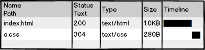
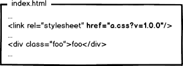
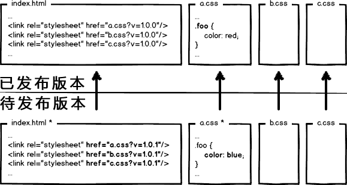
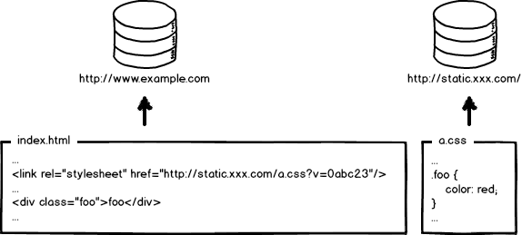
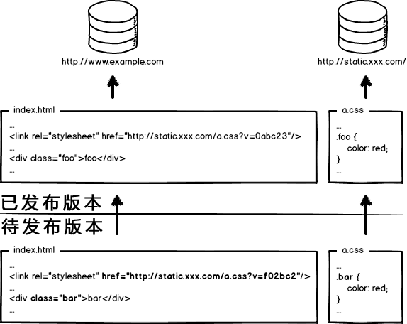

Este es un campo muy interesanteÁmbito frontend no convencional, este campo explora cómo resolver el problema integral de la optimización del desarrollo y despliegue del frontend mediante métodos de ingeniería. Desde que entré en la industria, he estado aprendiendo y practicando.
En mi impresión, Facebook es el pionero en este campo. Los compañeros que estén interesados y tengan una escalera (VPN) pueden ir a ver el código fuente de las páginas de Facebook para experimentar lo que significa la ingeniería.
A continuación, quiero explicarlo desde los principios. Hay muchas imágenes y es bastante largo; espero que tengan paciencia para leerlo todo.

Volvamos a lo esencial y empecemos por el desarrollo frontend más primitivo. La imagen superior muestra una página "adorable" index.html y su archivo de estilos a.css. Se escribe código con un editor de texto, no necesita compilación, se previsualiza localmente, se confirma que está OK, se sube al servidor y se espera a que los usuarios lo visiten. El frontend es así de simple, ¡qué divertido, qué bajo es el listón, se puede aprender en minutos, ¿verdad?!

Luego visitamos la página, vemos el efecto, echamos un vistazo a las peticiones de red: ¡200! Bien, ¡es jodidamente perfecto! Entonces, ¿la investigación y desarrollo está terminada...?
Espera, ¡esto no ha terminado! Para las grandes empresas, esas descomunales cantidades de tráfico y métricas de rendimiento harán que el frontend no sea nada "divertido".
Mira la petición de ese a.css: si cada vez que el usuario visita la página tuviera que cargarla, ¿no afectaría al rendimiento y desperdiciaría ancho de banda? Preferiríamos esto:

Usar el 304 para que el navegador utilice la caché local. Pero, ¿eso es suficiente? ¡No! El 304 se llama caché negociada; esto todavía requiere comunicarse una vez con el servidor. Nuestro nivel de optimización es extremo, así que debemos eliminar por completo esa petición, quedando así:

Forzar al navegador a usar la caché local (cache-control/expires) y que no se comunique con el servidor. Bien, la optimización de las peticiones ya ha llegado a un nivel extremo. Entonces surge la pregunta: si no dejas que el navegador haga peticiones de recursos, ¿cómo se actualiza la caché?
Muy bien, seguro que alguien ha pensado en una solución:Actualizando la ruta del recurso referenciado en la página, se consigue que el navegador abandone voluntariamente la caché y cargue el nuevo recurso.. Algo así:

En la próxima publicación, cambiando la dirección del enlace a una nueva versión, se actualiza el recurso, ¿no? OK, ¿se ha resuelto el problema? ¡Por supuesto que no! La locura de las grandes empresas vuelve a aparecer; piensa en esta situación:

La página referencia 3 CSS, pero en una publicación solo se modificó a.css. Si se actualizan las versiones de todos los enlaces, la caché de b.css y c.css también se invalidará. ¡¿No sería eso un desperdicio?!
Reactivando el modo extremo, no es difícil descubrir que para resolver este problema hay que relacionar la modificación de la URL con el contenido del archivo. Es decir, solo cuando el contenido del archivo cambia se produce el cambio de la URL correspondiente, logrando así un control de caché preciso a nivel de archivo.
¿Qué está relacionado con el contenido del archivo? Naturalmente pensamos en utilizar un algoritmo de resumen de datos para calcular el resumen del archivo. El resumen se corresponde uno a uno con el contenido del archivo, de modo que tenemos una base para el control de caché con una precisión de archivo individual. Bien, cambiemos la URL para que incluya el resumen:

Esta vez, si hay una modificación de archivo, solo se actualiza la URL correspondiente a ese archivo. Pensar en esto parece perfecto. ¿Crees que es suficiente? Las grandes empresas te dicen: ¡Demasiado joven, demasiado simple!
Uf~~~~, déjame tomar un respiro.
Las empresas de Internet modernas, para mejorar aún más el rendimiento de sus sitios web, despliegan los recursos estáticos y las páginas web dinámicas en clústeres separados. Los recursos estáticos se despliegan en nodos CDN, y los recursos referenciados en las páginas también adoptan las rutas de despliegue correspondientes:

Bien, cuando quiero actualizar los recursos estáticos, también actualizo las referencias en el HTML, algo así:

En este lanzamiento se cambiaron tanto la estructura como los estilos de la página, y también se actualizaron las direcciones URL correspondientes a los recursos estáticos. Ahora hay que publicar el código en producción. Querido compañero de desarrollo frontend, dime: ¿publicamos primero la página o primero los recursos estáticos?
Desplegar primero las páginas y después los recursosSi en el intervalo de tiempo entre el despliegue de ambos hay usuarios que acceden a la página, cargarán los recursos antiguos en la nueva estructura de la página y cachearán esa versión antigua como si fuera la nueva. El resultado es que el usuario ve una página con estilos desordenados; a menos que se actualice manualmente, la página seguirá mostrándose incorrectamente hasta que la caché expire.Desplegar primero los recursos y después las páginasDurante el intervalo de despliegue, los usuarios que tienen recursos antiguos en la caché local visitan el sitio. Como la página solicitada es de la versión antigua, las referencias a recursos no han cambiado, y el navegador usará directamente la caché local; en este caso la página se muestra normalmente. Pero los usuarios sin caché local o con caché caducada visitan el sitio, y ocurrirá que la página antigua cargue recursos nuevos, causando errores de renderizado. Sin embargo, una vez completado el despliegue de la página, estos usuarios volverán a visitarla y se mostrará normal. Bueno, el análisis anterior quiere decir: no se puede desplegar primero uno u otro; ambos causarán problemas de desorden en la página durante el despliegue. Por eso, en proyectos con poco tráfico, se puede hacer que los desarrolladores sufran un poco, publicando de madrugada a escondidas: primero los recursos estáticos y luego la página; así parece que hay menos problemas.
Pero las grandes empresas son extremas: no existe ese "período de valle absoluto", solo un "período de valle relativo". Así que, para ofrecer un servicio estable, hay que seguir buscando la perfección.
Este extraño problema se origina en la publicación por sobrescritura de recursos: usar el recurso pendiente de publicar para sobrescribir el ya publicado. Resolverlo es sencillo: implementar una publicación sin sobrescritura.

Mira la imagen de arriba: se usa el resumen del archivo para renombrar el archivo de recurso, colocando el resumen en la ruta de publicación del recurso. Así, un recurso cuyo contenido ha cambiado se convierte en un archivo nuevo que se publica en línea, sin sobrescribir los archivos existentes. Durante el lanzamiento, primero se despliegan todos los recursos estáticos y luego se despliega la página de forma gradual (canary). Así se resuelve el problema de manera bastante perfecta.
Por lo tanto, el plan de optimización de recursos estáticos de las grandes empresas básicamente debe implementar estos elementos:
- Configurar una caché local de larga duración — ahorra ancho de banda y mejora el rendimiento.
- Usar el resumen del contenido como base para la actualización de la caché — control de caché preciso.
- Desplegar recursos estáticos en CDN — optimiza las peticiones de red.
- Cambiar las rutas de publicación de recursos para lograr una publicación sin sobrescritura — actualización fluida.
Hacer todo el conjunto da como resultado un esquema de control de caché de recursos estáticos relativamente completo. Además, hay que tener en cuenta que el control de caché de recursos estáticos exige quetodos los lugares donde se cargan recursos estáticos en el frontend reciban este tratamiento.. Sí, ¡todos! No hace falta decir JS y CSS; también hay que incluir las rutas de recursos referenciadas dentro de los archivos JS y CSS. Dado que interviene el resumen, el resumen del recurso referenciado también provoca un cambio en el contenido del propio archivo que lo referencia, formando así cambios de resumen en cascada. El diagrama aproximado es:

Bien, hasta ahora hemos aprendido rápidamente los problemas de optimización y despliegue que enfrenta el frontend en cuanto al caché de recursos estáticos. Pero surge un nuevo problema: ¡¿cómo diablos se supone que los ingenieros escriban el código?!
Explicar el enfoque que combina optimización e ingeniería implicaría sacar a relucir un montón de problemas de ingeniería relacionados con desarrollo modular, carga de recursos, fusión de peticiones, frameworks de frontend, etc. Lo anterior es solo el comienzo; la solución es la esencia, pero hay demasiado que decir. Si tengo tiempo, lo desarrollaré poco a poco.
En resumen, ¡la optimización del rendimiento del frontend es definitivamente un problema de ingeniería!
Lo anterior no es algo que me haya inventado. Pueden observar las páginas de Baidu o Facebook y el código fuente de sus recursos estáticos, revisar cómo manejan las rutas de referencia de recursos y la parte de control de caché de los recursos estáticos en las peticiones de red. Una vez más, admiro el nivel de ingeniería frontend de Facebook; me quito el sombrero.
Se recomienda que los ingenieros de frontend presten más atención al campo de la ingeniería frontend. Quizás algunos piensen que su producto es pequeño y no necesita ser tan extremo, pero es muy posible que algún día necesites hacer este tipo de cambios. Además, si podemos llevar las cosas a un nivel más extremo, ¿por qué no hacerlo?
Además, no pienses que estos son problemas que deben resolver los ingenieros de operaciones o backend. Si son otros roles quienes los resuelven,todos tienden a dejar a los demás los problemas que no les importan,entonces el proceso de desarrollo de los ingenieros de frontend se verá enormemente limitado; ¡esta situación no es rara incluso en algunas grandes empresas!
Fuente: http://www.zhihu.com/question/20790576/answer/32602154